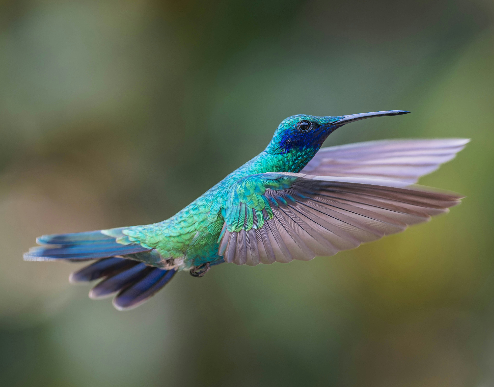
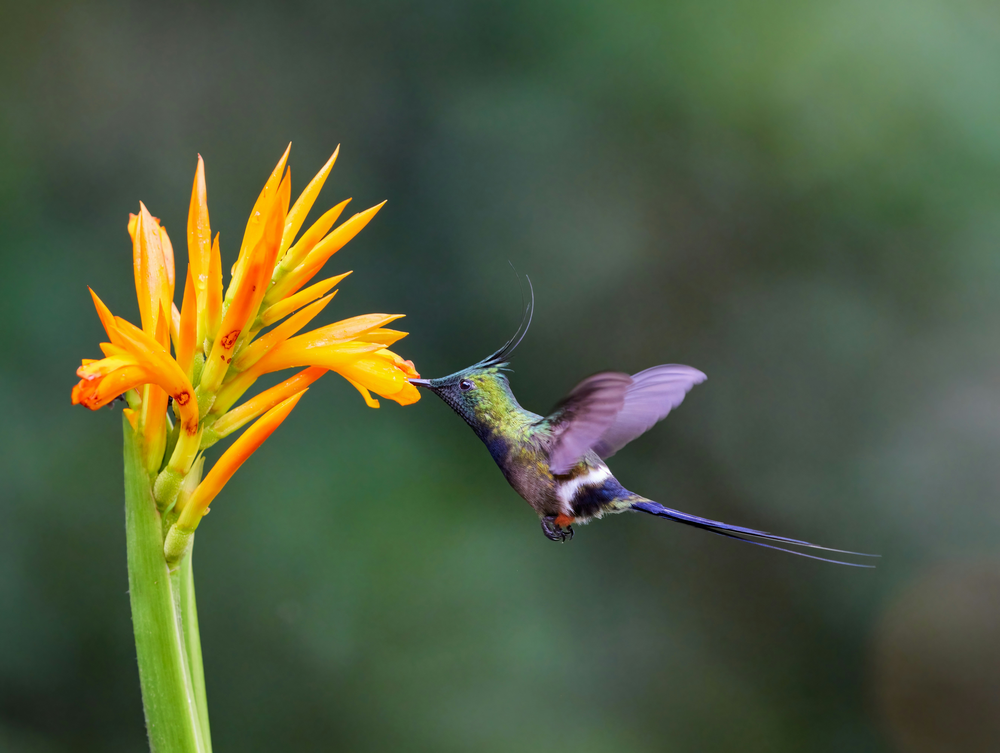

Why Hummingbirds Are So Special
Introduction to Hummingbirds
Hummingbirds are among the most fascinating and beautiful birds in the world. Known for their rapid wing beats and
vibrant iridescent feathers, they capture the imagination of anyone who observes them. Native to the Americas, these
tiny birds have unique adaptations that make them stand out in the avian world.
Incredible Speed and Agility
Hummingbirds are remarkable fliers, capable of reaching speeds up to 61 mph (98 km/h). Their ability to hover in place
and fly backward is due to their unique wing structure, allowing them to maneuver with extraordinary precision. This
agility helps them access nectar from flowers while avoiding predators.

The Beauty of Iridescent Feathers
The iridescent feathers of hummingbirds are one of their most distinctive features. These vibrant colors are not from
pigments, but from microscopic platelets in their feathers that reflect light in stunning ways. Their feathers can shift
colors, creating a shimmering effect that adds to their charm. The beauty of these birds is not only in their appearance
but in the way they move.

Hummingbirds as Pollinators
Hummingbirds are important pollinators, transferring pollen from flower to flower as they feed on nectar. Their
specialized long bills and tongues are perfectly designed for reaching deep into tubular flowers. This process aids in
the reproduction of many plants, making them vital for the ecosystem.

Their Role in Nature
Hummingbirds play a crucial role in maintaining biodiversity. They contribute to the health of ecosystems by aiding in
the pollination of a variety of plants, many of which rely solely on these birds for reproduction. In addition, they help
control insect populations, feeding on tiny insects and spiders during their feeding routines.